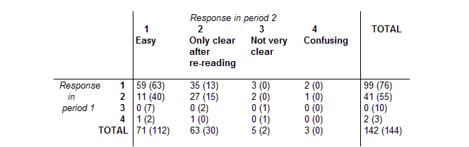
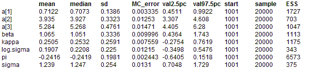

Inhaler: ordered categorical data
Ezzet and Whitehead (1993) analyse data from a two-treatment, two-period crossover trial to compare 2 inhalation devices for delivering the drug salbutamol in 286 asthma patients. Patients were asked to rate the clarity of leaflet instructions accompanying each device, using a 4-point ordinal scale. In the table below, the first entry in each cell (r,c) gives the number of subjects in Group 1 (who received device A in period 1 and device B in period 2) giving response r in period 1 and response c in period 2. The entry in brackets is the number of Group 2 subjects (who received the devices in reverse order) giving this response pattern.
The response R
it from the
i th subject (
i = 1,...,286) in the
t th period (
t = 1,2) thus assumes integer values between 1 and 4. It may be expressed in terms of a continuous latent variable Y
it taking values on (-inf, inf) as follows:
R
it = j if Y
it in [a
j - 1, a
j), j = 1,..,4
where a
0 = -inf and a
4 = inf. Assuming a logistic distribution with mean
μit for Y
it, then the cumulative probability Q
itj of subject
i rating the treatment in period
t as worse than category
j (i.e. Prob( Y
it >= a
j ) is given by
logitQ
itj = -(a
j +
μsit + b
i)
where b
i represents the random effect for subject
i. Here,
μsit depends only on the period
t and the
sequence s
i = 1,2 to which patient
i belongs. It is defined as
μ11 =
β / 2 +
π / 2
μ12 = -
β / 2 -
π / 2 -
κ μ21 = -
β / 2 +
π / 2
μ22 =
β / 2 -
π / 2 +
κ where
β represents the treatment effect,
π represents the period effect and
κ represents the carryover effect. The probability of subject
i giving response
j in period
t is thus given by p
itj = Q
itj - 1 - Q
itj, where Q
it0 = 1 and Q
it4 = 0 (see also the Bones example).
The
BUGS language for this model is shown below. We assume the b
i's to be normally distributed with zero mean and common precision
τ. The fixed effects
β,
π and
κ are given vague normal priors, as are the unknown cut points a
1, a
2 and a
3. We also impose order constraints on the latter using the T(,) notation in
BUGS, to ensure that a
1 < a
2 < a
3.
model
{
#
# Construct individual response data from contingency table
#
for (i in 1 : Ncum[1, 1]) {
group[i] <- 1
for (t in 1 : T) { response[i, t] <- pattern[1, t] }
}
for (i in (Ncum[1,1] + 1) : Ncum[1, 2]) {
group[i] <- 2 for (t in 1 : T) { response[i, t] <- pattern[1, t] }
}
for (k in 2 : Npattern) {
for(i in (Ncum[k - 1, 2] + 1) : Ncum[k, 1]) {
group[i] <- 1 for (t in 1 : T) { response[i, t] <- pattern[k, t] }
}
for(i in (Ncum[k, 1] + 1) : Ncum[k, 2]) {
group[i] <- 2 for (t in 1 : T) { response[i, t] <- pattern[k, t] }
}
}
#
# Model
#
for (i in 1 : N) {
for (t in 1 : T) {
for (j in 1 : Ncut) {
#
# Cumulative probability of worse response than j
#
logit(Q[i, t, j]) <- -(a[j] + mu[group[i], t] + b[i])
}
#
# Probability of response = j
#
p[i, t, 1] <- 1 - Q[i, t, 1]
for (j in 2 : Ncut) { p[i, t, j] <- Q[i, t, j - 1] - Q[i, t, j] }
p[i, t, (Ncut+1)] <- Q[i, t, Ncut]
response[i, t] ~ dcat(p[i, t, ])
}
#
# Subject (random) effects
#
b[i] ~ dnorm(0.0, tau)
}
#
# Fixed effects
#
for (g in 1 : G) {
for(t in 1 : T) {
# logistic mean for group i in period t
mu[g, t] <- beta * treat[g, t] / 2 + pi * period[g, t] / 2 + kappa * carry[g, t]
}
}
beta ~ dnorm(0, 1.0E-06)
pi ~ dnorm(0, 1.0E-06)
kappa ~ dnorm(0, 1.0E-06)
# ordered cut points for underlying continuous latent variable
a[1] ~ dunif(-1000, a[2])
a[2] ~ dunif(a[1], a[3])
a[3] ~ dunif(a[2], 1000)
tau ~ dgamma(0.001, 0.001)
sigma <- sqrt(1 / tau)
log.sigma <- log(sigma)
}
Note that the data is read into
BUGS in the original contigency table format to economize on space and effort. The indivdual responses for each of the 286 patients are then constructed within
BUGS.
Data
list(N = 286, T = 2, G = 2, Npattern = 16, Ncut = 3,
pattern = structure(.Data =
c(1, 1,
1, 2,
1, 3,
1, 4,
2, 1,
2, 2,
2, 3,
2, 4,
3, 1,
3, 2,
3, 3,
3, 4,
4, 1,
4, 2,
4, 3,
4, 4), .Dim = c(16, 2)),
Ncum = structure(.Data =
c( 59, 122,
157, 170,
173, 173,
175, 175,
186, 226,
253, 268,
270, 270,
271, 271,
271, 278,
278, 280,
280, 281,
281, 281,
282, 284,
285, 285,
285, 286,
286, 286), .Dim = c(16, 2)),
treat = structure(.Data =
c( 1, -1,
-1, 1), .Dim = c(2, 2)),
period = structure(.Data =
c( 1, -1,
1, -1), .Dim = c(2, 2)),
carry = structure(.Data =
c( 0, -1,
0, 1), .Dim = c(2, 2))
)
Inits for chain 1
list(beta = 0, pi = 0, kappa = 0, a = c(2, 3, 4), tau = 1)
Inits for chain 2
list(beta = 1, pi = 1, kappa = 0, a = c(3, 4, 5), tau = 0.1)
ResultsThe estimates can be compared with those of Ezzet and Whitehead, who used the Newton-Raphson method and numerical integration to obtain maximum-likelihood estimates of the parameters. They reported
β = 1.17 +/- 0.75,
π = -0.23 +/- 0.20,
κ = 0.21 +/- 0.49, log
σ = 0.17 +/- 0.23, a1 = 0.68, a2 = 3.85, a3 = 5.10